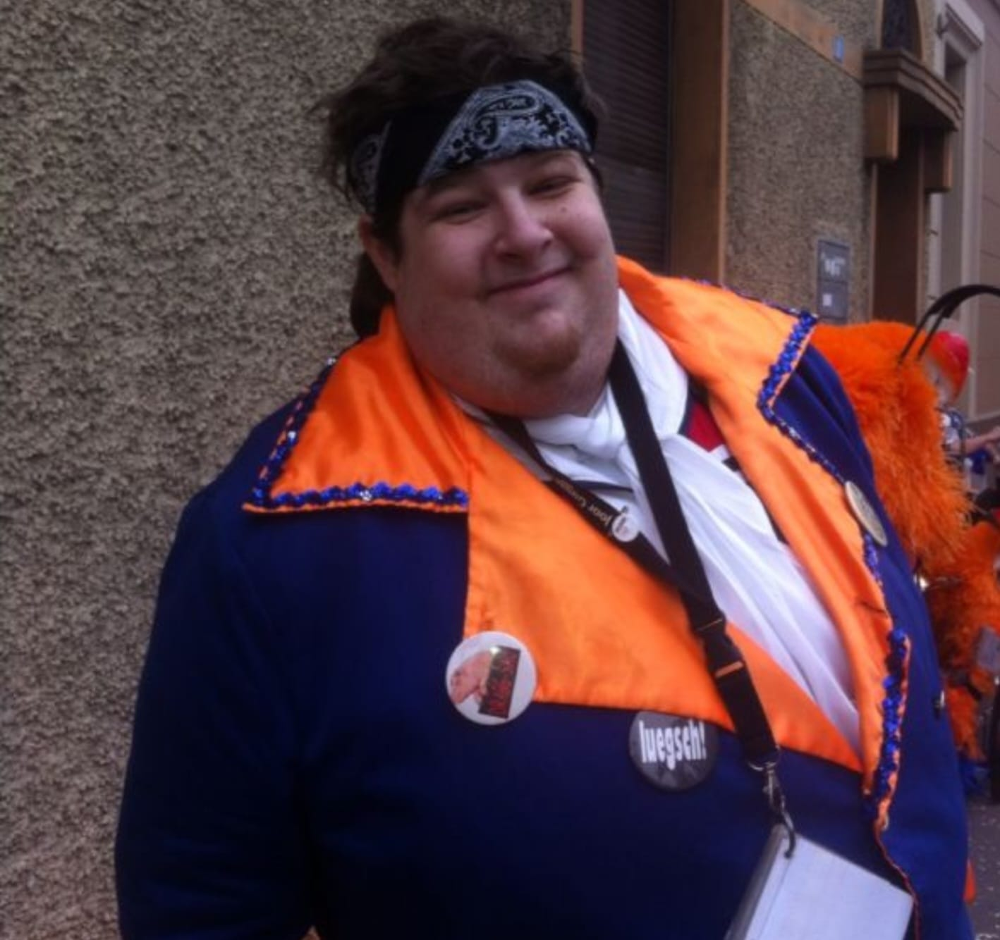

Augschte 2024

Es heisst doch so schön wär stoh blibt verliert,
drum hän mir uns au nid geniert.
E Schritt ind Zuekunft hämmer welle mache,
und das mit einige neue Sache.
Neu Probe mr in dr KLybeckstroos 15 dr Mittwuch blibt bestoh,
Mr hän scho s erschtmol dört zämme ein gnoh.
Au unser Logo hämmer neu kreiert und dr Zyt entsprächend modärnisiert.
Und z letsch het au unsere Major noch 15 johr dr Schritt in die hintere Rheie gmacht,
so dass dr Steve jetzt neu für uns vorne lacht.